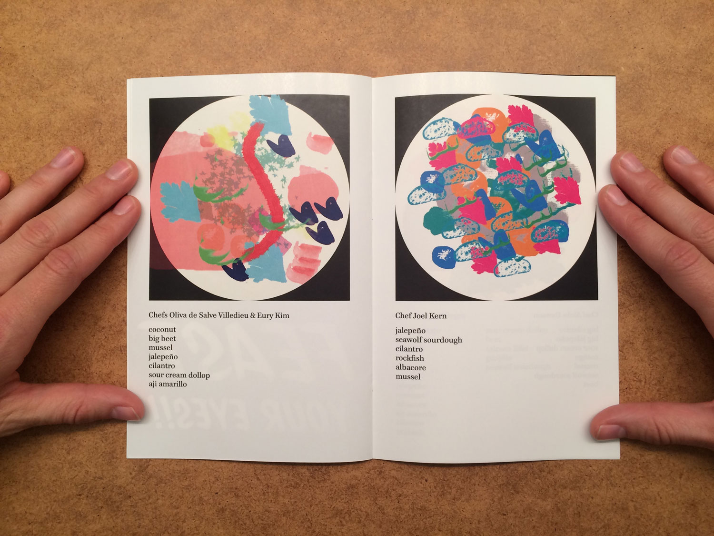
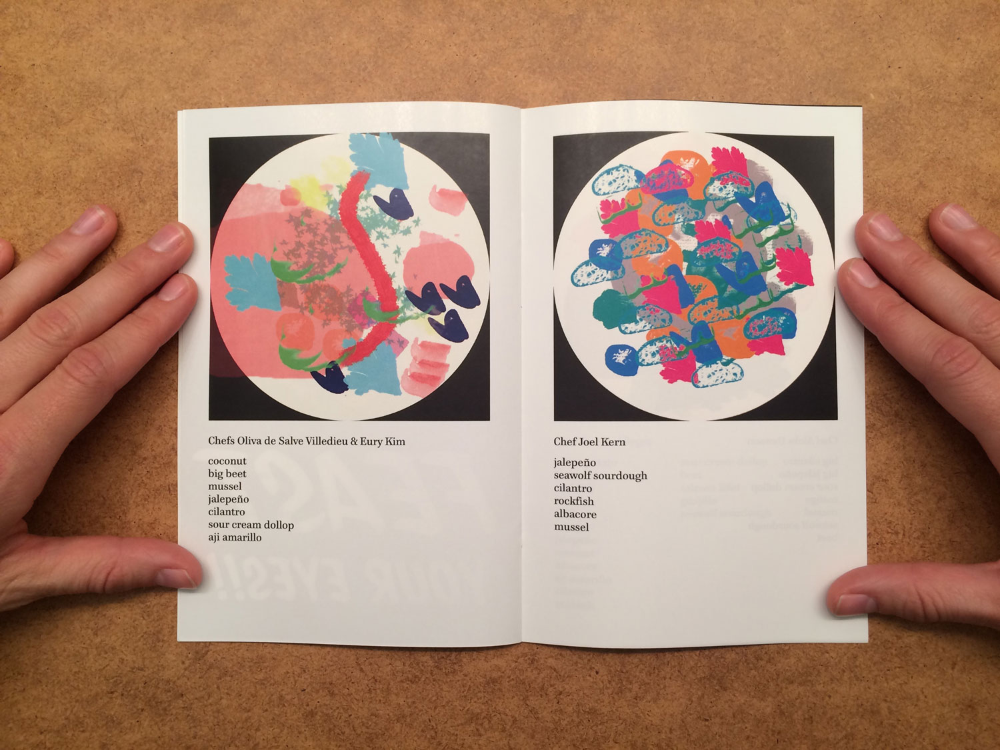
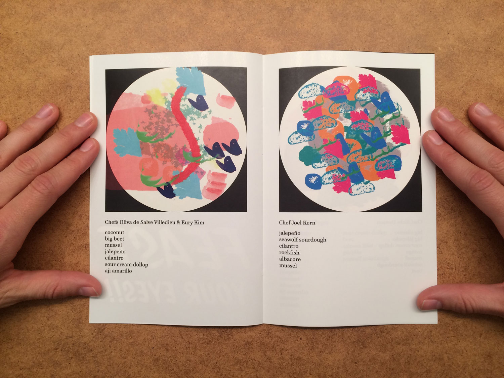
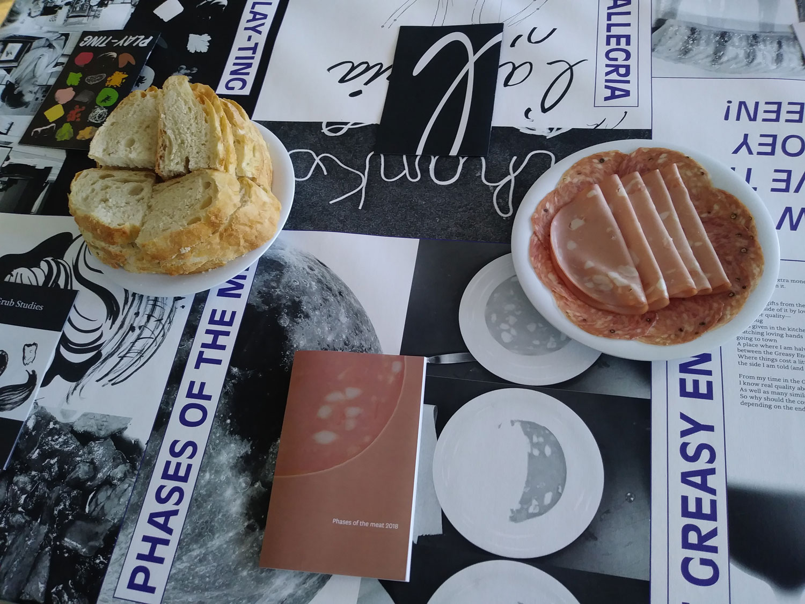
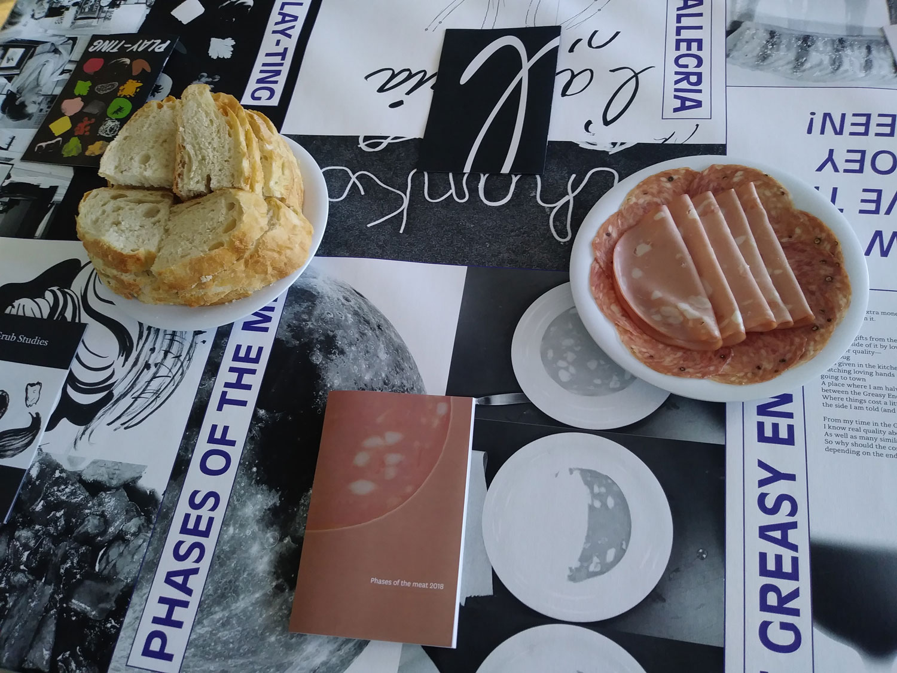

I wrote and designed a series of booklets concerning food for my RISD senior thesis. But while these booklets use food as a subject from which to bounce off, they have more to do with the stuff surrounding food—design of course, and also consumption, production, relationships, and so on. Each booklet serves to culminate a different line of thought.
For example, with the booklet below, which I call Cool as a Pickle, I brought together excerpts from essays by Rick Poynor and Nick Compton with my own written examination of pickle package design. In doing so, I ask the reader to consider the politics behind the packaging that attracts them.
Another booklet, Play-ting, is the culmination of a workshop activity I designed for RISD graduate students. In the activity, participants were given a set of seventeen PhotoShop brushes I made, each for a different ingredient, and a circular “plate” canvas. I then asked that they design a dish using those brushes. The Play-ting booklet shows the dishes designed:

I presented these booklets on a long table, draped with a tablecloth I also designed. Beneath each booklet on the table, I summarized with visuals (and a few words) the consideration behind them.
 

For my final critique, I invited critics and guests to sit with me at the table. We shared a small meal, read aloud from the booklets and had a discussion.
We talked about the intersection of writing and graphic design. We talked about the spirit of gathering as we were, about sharing, and the incorporation of this into my practice. With this degree project, I’ve built myself a foundation of sorts, based in this spirit of communal consideration.